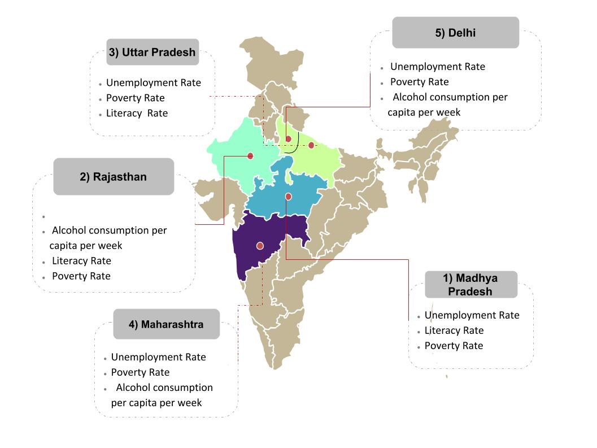

| MAP SHOWING HIGH DENSITY ZONES IN INDIA FOR RAPE CASES | LIST OF STATES ACCORDING TO RAPE CASES REGISTERED IN 2014 | ||
|  | 1> Madhya Pradesh 13.82 % | 2> Rajasthan 10.23 % | 3> Uttar Pradesh 9.44 % |
| 4> Maharashtra 9.36 % | 5> Delhi UT 5.71 % | 6> Assam 5.39 % | |
| 7> Odisha 5.38 % | 8> West Bengal 3.99 % | 9> Chhattisgarh 3.91 % | |
| 10> Kerala 3.67 % | 11> Karnataka 3.60 % | 12> Haryana 3.20 % | |
| 13> Bihar 3.07 % | 14> Jharkhand 2.86 % | 15> Punjab 2.67 % | |
| 16> Telangana 2.67 % | 17> Andhra Pradesh 2.62 % | 18> Gujarat 2.29 % | |
| 19> Tamil Nadu 1.24 % | 20> Jammu & Kashmir 0.90 % | 21> Himachal Pradesh 0.77 % | |
| 22> Uttarakhand 0.73 % | 23> Tripura 0.65 % | 24> Mizoram 0.33 % | |
| 25> Meghalaya 0.32 % | 26> Goa 0.26 % | 27> Arunachal Pradesh 0.23 % | |
| 28> Manipur 0.20 % | 29> Chandigarh 0.16 % | 30> Sikkim 0.13 % | |
| 31> A & N Islands 0.09 % | 32> Nagaland 0.08 % | 33> Puducherry 0.03 % | |
| 34> D&N Haveli 0.01 % | 35> Daman & Diu 0.01 % | 36> Lakshadweep 0.00 % | |